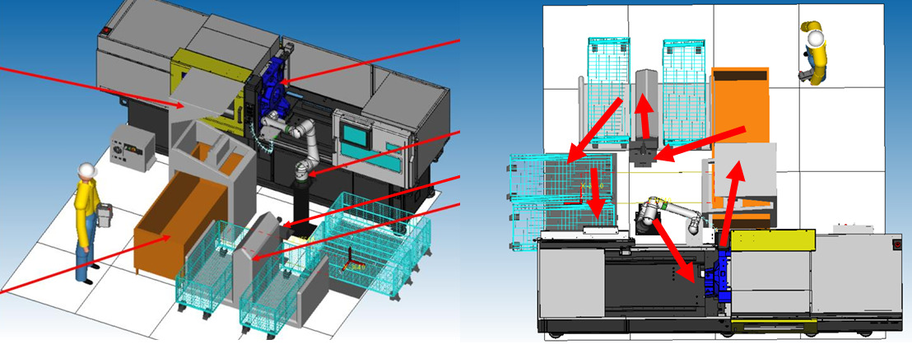

2024 - 2025
Création d'une Ferme Urbaine Miniature
Objectif(s) :
Par équipe de 6 personnes, nous devons au cours de notre deuxième d'école d'ingénieur, créer un prototype fonctionnel à une problématique posée en début d'année.
Dans notre cas, la problématique est la suivante : Créer une ferme urbaine capable de prendre le plus d'espace possible au sein de la Rotonde à Lille.
En quelques mois, après beaucoup de théorie et de pratique, nous avons obtenus un résultat très concluant, moderne et avec une méthode d'arrosage atypique : l'aéroponie.
Dans notre cas, la problématique est la suivante : Créer une ferme urbaine capable de prendre le plus d'espace possible au sein de la Rotonde à Lille.
En quelques mois, après beaucoup de théorie et de pratique, nous avons obtenus un résultat très concluant, moderne et avec une méthode d'arrosage atypique : l'aéroponie.
Photo d'illustration :
.jpg)
2023 - 2024
Participation au Concours USAIRE Student Awards 2024
Statut du projet :Terminé.
Objectif(s) :
En tant que membre d'une équipe de deux personnes, j'ai eu l'opportunité de participer au concours USAIRE Student Awards 2024, qui vise à encourager les étudiants à proposer des solutions innovantes dans le domaine de l'aéronautique et de la défense.
Ce concours prestigieux a pour objectif principal de stimuler la créativité et l'innovation chez les étudiants en les confrontant à des problématiques réelles et actuelles de l'industrie. Les attentes incluent la capacité à penser de manière critique, à collaborer efficacement en équipe et à présenter des solutions viables et bien structurées.
Problématique de l'année :
La problématique de l'année 2024 était la suivante : "Propose a specific and concrete project with an associated business case that you hope will disrupt the aerospace industry by 2040".
Notre Solution :
Pour répondre à la problématique, nous avons développé une solution innovante consistant à récupérer l'énergie du corps humain grâce à un système intégrant des modules Seebeck. Ce système est capable de transformer l'énergie thermique générée par le corps en énergie électrique, afin d'alimenter les appareils électriques ou les batteries d'un avion.
Sélection et Reconnaissance :
Notre proposition initiale, un "One Pager", a été sélectionnée parmi de nombreuses candidatures, nous permettant ainsi de devenir finalistes du concours. Cette reconnaissance nous a également permis de rejoindre l'association ORAJe, un réseau prestigieux de jeunes talents dans le domaine de l'aéronautique.
Développement et Présentation :
En tant que finalistes, nous avons été invités à développer notre solution en un document plus détaillé de 10 pages, présentant notre vision et notre approche pour résoudre la problématique posée. Ces deux documents "One Pager" et "10 Pagers" sont en libres accès en cliquant sur le bouton "Télécharger le rapport complet" ci dessous.
Résultats du concours : Parmi les 15 équipes finalistes.
Ce concours prestigieux a pour objectif principal de stimuler la créativité et l'innovation chez les étudiants en les confrontant à des problématiques réelles et actuelles de l'industrie. Les attentes incluent la capacité à penser de manière critique, à collaborer efficacement en équipe et à présenter des solutions viables et bien structurées.
Problématique de l'année :
La problématique de l'année 2024 était la suivante : "Propose a specific and concrete project with an associated business case that you hope will disrupt the aerospace industry by 2040".
Notre Solution :
Pour répondre à la problématique, nous avons développé une solution innovante consistant à récupérer l'énergie du corps humain grâce à un système intégrant des modules Seebeck. Ce système est capable de transformer l'énergie thermique générée par le corps en énergie électrique, afin d'alimenter les appareils électriques ou les batteries d'un avion.
Sélection et Reconnaissance :
Notre proposition initiale, un "One Pager", a été sélectionnée parmi de nombreuses candidatures, nous permettant ainsi de devenir finalistes du concours. Cette reconnaissance nous a également permis de rejoindre l'association ORAJe, un réseau prestigieux de jeunes talents dans le domaine de l'aéronautique.
Développement et Présentation :
En tant que finalistes, nous avons été invités à développer notre solution en un document plus détaillé de 10 pages, présentant notre vision et notre approche pour résoudre la problématique posée. Ces deux documents "One Pager" et "10 Pagers" sont en libres accès en cliquant sur le bouton "Télécharger le rapport complet" ci dessous.
Résultats du concours : Parmi les 15 équipes finalistes.
Photo d'illustration :

2022 - 2023
Conception d'un robot
Statut du projet : En cours.
Objectif(s) :
Le but de ce projet est de concevoir un robot capable de visualiser, d'observer son environnement et de réagir en conséquence.
Approche :
J'ai commencé par la conception 3D du robot en utilisant SolidWorks. Ensuite, j'ai effectué les calculs nécessaires pour choisir les bons composants et obtenir les fonctionnalités souhaitées. Pour la partie contrôle, j'ai utilisé Matlab pour le contrôle de la caméra et Arduino pour tous les autres capteurs et actionneurs.
Résultats :
Initialement conçu comme un animatronique, le robot est désormais capable d'interagir avec son environnement. Bien que le projet soit encore en cours et se concentre actuellement sur la tête du robot, il est opérationnel et évolue constamment. Cette expérience est très enrichissante et me permet de passer du bon temps tout en développant mes compétences.
Une synthèse du projet peut être téléchargée via le bouton ci-dessous.
Approche :
J'ai commencé par la conception 3D du robot en utilisant SolidWorks. Ensuite, j'ai effectué les calculs nécessaires pour choisir les bons composants et obtenir les fonctionnalités souhaitées. Pour la partie contrôle, j'ai utilisé Matlab pour le contrôle de la caméra et Arduino pour tous les autres capteurs et actionneurs.
Résultats :
Initialement conçu comme un animatronique, le robot est désormais capable d'interagir avec son environnement. Bien que le projet soit encore en cours et se concentre actuellement sur la tête du robot, il est opérationnel et évolue constamment. Cette expérience est très enrichissante et me permet de passer du bon temps tout en développant mes compétences.
Une synthèse du projet peut être téléchargée via le bouton ci-dessous.
Vidéo d'illustration :
2021 - 2022
Participation aux Olympiades FANUC 2022
Statut du projet : Terminé.
Objectif(s) :
Nous étions la première promotion à y participer sur notre temps libre car l'école au niveau de notre DUT n'avait pas de résultats officiels pour ce concours. L'objectif était de développer une solution optimale en suivant un cahier des charges.
Mon rôle :
J'ai principalement travaillé sur la conception 3D avec SolidWorks et sur la programmation avec Roboguide. Nous avons travaillé en étroite collaboration avec deux professeurs (Mécanique Dynamique et Robotique).
Résultats et reconnaissance :
Le projet s'est très bien passé et nous avons été invités à assister à l'évènement pour nous féliciter du travail accompli par l'équipe. Depuis ce jour, le département Génie Mécanique et Productique (GMP) de Bourges, qui possède une spécialité en robotique, participe tous les ans à ces Olympiades.
Vous pouvez télécharger notre dossier technique en cliquant sur le bouton "Télécharger le rapport complet" ci-dessous.
Mon rôle :
J'ai principalement travaillé sur la conception 3D avec SolidWorks et sur la programmation avec Roboguide. Nous avons travaillé en étroite collaboration avec deux professeurs (Mécanique Dynamique et Robotique).
Résultats et reconnaissance :
Le projet s'est très bien passé et nous avons été invités à assister à l'évènement pour nous féliciter du travail accompli par l'équipe. Depuis ce jour, le département Génie Mécanique et Productique (GMP) de Bourges, qui possède une spécialité en robotique, participe tous les ans à ces Olympiades.
Vous pouvez télécharger notre dossier technique en cliquant sur le bouton "Télécharger le rapport complet" ci-dessous.
Photo d'illustration :
